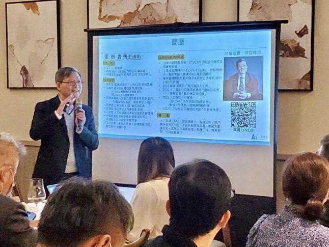

1/18這天，，Ai3 co. 張榮貴董事長受邀至「企業數位轉型中部CEO論壇」分享如何讓Ai成為企業轉型的幫手，協助企業成長，不僅使用案例分享讓來賓更清楚理解應用，也分享了未來面臨的難題及科技趨勢。

AI逐漸成為當今商業世界不可或缺的一部分，它不僅改變了我們的生活方式，也深刻影響我們的工作。為了確保企業在競爭激烈的市場中保持競爭力，需跟隨時代的腳步進行AI轉型。將AI融入產品和服務中，以滿足客戶的需求和期望。
然而，轉型並非一件容易的事。它需要全面的策略和計劃，以及充足的資源和投資。以更好地利用AI的優勢，成為行業的領先者，為企業創造更美好的未來。
Ai3 co.透過先進的人工智慧技術，投資大量的資源和時間，培訓相關的人員。協助企業產品與服務提升，提供高效的智能技術。例如，聊天機器人使用自然語言處理技術，提供更流暢的對話，提供客戶詳細的解答；通過使用蒐集數據技術，我們可以更快速地分析大量數據，讓客戶能夠精準行銷，打動消費者。
Ai3 co.協助的產業類別非常多元，從服務業、金融業、電商甚至到政府機構，期許未來有更多不同的行業類別一起加入轉型的浪潮。